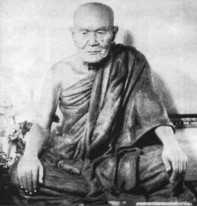
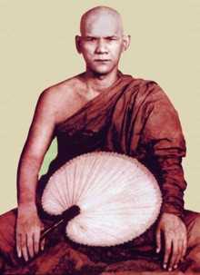

|
Books by Mahāsi Sayādaw | | 1963 A Discourse on the Anattalakkhana Sutta 1964 A Discourse on the Cūlavedalla Sutta 1965 A Discourse on the Vammika Sutta 1976 A Discourse on the Tuvataka Sutta -
| Electronic & Commercial Publications |
The Great Discourse on the Turning of the Wheel of Dhamma
(Dhammacakkappavattana Sutta) The Dhammacakkappavattana Sutta, the Great Discourse on the Turning of the Wheel of Dhamma, is the Buddha’s First Sermon. Being the First Sermon, it is the most
ancient and straightforward of the Buddha’s teachings. Rare is the person, amongst the laity of a Buddhist country such as Burma, who has not heard of this discourse, and many are those who have committed it to memory. There are religious groups, known as “Wheel of Dhamma Reciting Societies,” in almost every town and village in Burma, set up to recite and listen to the Sutta. Buddhist followers regard this Sutta with great esteem and veneration. (From the Sayādaw’s own Introduction) |
|
Portable Document Version Venerable Mahāsi Sayādaw’s Discourse on the Dhammacakka Sutta • A PDF edition published by Sukhi Hotu in 1998, which closely follows the text of the original translation first published by the Mahāsi organization. Click on the
graphic to download the PDF file (1.97 Mbytes) from the Buddhanet website. | | The Sallekha Sutta
(A Discourse on the Refinement of Character) These editions were published by the Buddhadharma Foundation in Bangkok and are available from Wisdom Books. In his introduction to the Sutta the Venerable Sayādaw says: “The self-training leading to this goal (the expunging of defilements), forms the subject of the Sallekha Sutta, a sutta that is beneficial to meditators and non-meditators alike, who wish to overcome immoral desires and cultivate wholesome ones.” (From the Preface by the Translator, U Aye Maung)
|
| Brahmavihāra Dhamma This valuable discourse on the practise of the four Brahmavihāras by Venerable Mahāsi Sayādaw runs to 490 pages. This is the original translation published by the Mahāsi Organization. Click on the graphic to download the PDF file (2.46 Mbytes) from the Buddhanet website. | | A Discourse on Dependent Origination This edition was edited by Bhikkhu Pesala and published by the Buddhadhamma Foundation in Bangkok in 1999. However, I have not been able to trace a supplier. You can read the entire book on my website. Please inform me if you find a supplier in the UK. | | The Great Discourse on Not-self This book was published by the Buddhadhamma Foundation in Bangkok. Please inform me if you find s supplier in the UK. | | Thoughts on Dhamma
Sermons from the late Sayādaw on various suttas. | | Satipatthāna Vipassanā
Advice from the popular Burmese meditation master. | | Ups and Downs of Rebirth
The Story of Queen Upari; From Brahma Land to Pig Pen
The Story of Samana Deva; a Story from Sri Lanka. | | NotesThe dates refer to the date that the Sayādaw first gave the talk.Some talks would have been given many times and in different branch centres that the Sayādaw visited. The talks were mostly printed in a Burmese edition first, and only translated to English and republished in various editions later.
The precise dates for discourses given as 19?? are currently unknown. The Sayādaw’s treatise in Burmese on insight meditation was written when he was teaching meditation at his home town of Seikkhun, near Shwebo where he returned when World War II began.
It was first published in 1944. Chapter V of that treatise was written in colloquial language for ease of understanding. This chapter was first translated to English and published as “Practical Insight Meditation in 1970.” A discourse was given daily to each batch of meditators arriving at the Centre. The discourse given on 27th July 1951 to a group of fifteen new
meditators was taped. This discourse was translated into English and published as Satipatthāna Vipassanā in 1957. This compilation of brief sayings from various discourses by the Saāadaw was edited by Venerable Nyānaponika Thera and first published by the BPS in 1983.
| Venerable Mahāsi Sayādaw1904 - 1982: A Biographical Sketchby U Nyi Nyi The Venerable Mahāsi Sayādaw was born in 1904 at Seikkhun, a large, prosperous and charming village lying about seven miles to the west of the historic Shwebo town in Upper Myanmar. His parents, U Kan Taw and Daw Oke, kept a small shop. At the age of six he was sent to receive his early monastic education under U Adicca, presiding monk of Pyinmana Monastery at Seikkhun. Six years later, he was initiated as a novice (sāmanera)
under the same teacher, and given the name of Shin Sobhana (which means Auspicious). The name befitted his courageous features and dignified behaviour. He was a bright pupil, making remarkably quick progress in scriptural studies. When U Adicca left the Order, Shin Sobhana continued his studies under Sayādaw U Parama of Thugyi-kyaung Monastery, Ingyintaw-taik. At the age of nineteen he had to decide whether to remain in the Order and devote the rest of his life to the service of the
Buddhasāsana or return to lay life. Shin Sobhana knew where his heart lay and unhesitatingly chose the first course. He was ordained as a bhikkhu on the 26th of November 1923, Sumedha Sayādaw Ashin Nimmala acting as his preceptor. Within four years Ven. Sobhana passed all three grades of the Pāli scriptural examinations conducted by the Government. Mingun Jetavan Sayādaw
Ven. Sobhana next went to the city of Mandalay, noted for its pre-eminence in Buddhist learning, to pursue advanced study of the scriptures under Sayādaws well-known for their learning. His stay at
Khinmakan-west Monastery for this purpose was, however, cut short after little more than a year when he was called to Moulmein. The head of the Taik-kyaung monastery in Taungwainggale (who came from the same village as Ven. Sobhana) wanted him to help teach his pupils. While teaching at Taungwainggale, Ven. Sobhana continued his own scriptural study, being especially interested in the Mahāsatipatthāna Sutta. His deepening interest in the satipatthāna method of vipassanā
meditation led him to neighbouring Thaton, where the well-known Mingun Jetavan Sayādaw was teaching it. | Intensive Practise of VipassanāUnder the Mingun Jetavan Sayādaw’s instruction, Ven. Sobhana took up intensive practice of
vipassanā meditation. Within four months he had such good results that he could teach it properly to his first three disciples at Seikkhun while he was visiting there in 1938. After his return from Thaton to Taungwainggale (owing to the grave illness and subsequent death of the aged Taik-kyaung Sayādaw) to resume his teaching work and to take charge of the monastery, Ven. Sobhana sat for and passed with distinction the Government-held Dhammācariya (Dhamma Teacher) examination in June
1941.On the eve of the Japanese invasion of Myanmar, Ven. Sobhana had to leave Taungwainggale and return to his native Seikkhun. This was a welcome opportunity for him to devote himself wholeheartedly to his own practice of Satipatthāna Vipassanā meditation, and to teach a growing number of disciples. The Mahāsi Monastery at Seikkhun (whence he became known as Mahāsi Sayādaw) fortunately remained free from the horror and disruption of war. During this period the Sayādaw’s disciples
prevailed upon him to write the “Manual of Vipassanā Meditation”, an authoritative and comprehensive work expounding both the doctrinal and practical aspects of Satipatthāna meditation. Invitation to RangoonIt was not long before the Mahāsi
Sayādaw’s reputation as a skilled meditation teacher had spread throughout the Shwebo-Sagaing region and come to the attention of a devout and wealthy Buddhist, Sir U Thwin. U Thwin wanted to promote the Buddhasāsana by setting up a meditation centre directed by a teacher of proven virtue and ability. After listening to a discourse on vipassanā given by the Sayādaw, and observing his serene and noble demeanour, U Thwin had no difficulty in deciding that the Mahāsi Sayādaw was the
meditation teacher he had been looking for.On the 13th of November 1947, the Buddhasāsana Nuggaha Association was founded in Yangon with Sir U Thwin as its first President. The Association’s aims were to promote scriptural learning and practice of the Dhamma. Sir U Thwin donated to the Association a plot of land in Hermitage Road, Yangon, measuring over five acres, for the proposed meditation centre. (By 1978, the Centre occupied 19.6 acres, on which many buildings and ancilliary
structures had been built). Sir U Thwin told the Association that he had found a suitable meditation teacher, and he proposed that the then Prime Minister of Myanmar invite Mahāsi Sayādaw to the Centre.After the Second World War, the Sayādaw alternated his residence between his native Seikkhun and Taungwainggale in Moulmein. Meanwhile, Myanmar had regained independence on 4th January 1948. In May 1949, during one of his sojourns at Seikkhun, the Sayādaw completed a new nissaya translation
of the Mahāsatipatthāna Sutta. This work excels the average nissaya translation of this sutta, which is very important for those who wish to practise vipassanā meditation, but need guidance. | Venerable Mahāsi Sayādaw in 1949In November of that year, on the personal invitation of the then Prime Minister, U Nu, Mahāsi Sayādaw came down from Shwebo and Sagaing to the meditation centre at Yangon, accompanied by two senior Sayādaws. Thus began Mahāsi Sayādaw’s guardianship of
the Sāsana Yeikthā at Yangon. On 4th December 1949 Mahāsi Sayādaw personally instructed the very first batch of twenty-five meditators in the practice of vipassanā. As the number of meditators grew, it became too demanding for the Sayādaw to give the long initiation talk to all of them. So from July 1951 a tape-recorded talk was played for each new batch of meditators, with a brief introduction by the Sayādaw. Within a few years of the
establishment of the Sāsana Yeikthā at Yangon, many similar meditation centres were inaugurated in other parts of the country with Mahāsi-trained members of the Sangha as meditation teachers. These centres were not confined to Myanmar, but included other Theravāda countries like Thailand and Sri Lanka. There were also centres in Cambodia and India. According to a 1972 census, the total number of meditators trained at all these centres (both in
Myanmar and abroad) exceeded seven hundred thousand. In recognition of his distinguished scholarship and spiritual attainments, Mahāsi Sayādaw was honoured in 1952 by the then President of the Union of Myanmar with the prestigious title of ‘Aggamahāpandita’ (the Exalted Wise One). | The Sixth Buddhist Council
Chattha Sangāyana |
| Soon after regaining Independence, the Government of Myanmar began plans to hold a Sixth Buddhist Council (Sangāyana) in Myanmar, with four other Theravāda Buddhist countries (Sri Lanka, Thailand, Cambodia, and Laos) participating. For this purpose the Government dispatched a mission to Thailand and Cambodia, composed of Nyaungyan Sayādaw, Mahāsi Sayādaw, and two laymen. The mission
discussed the plan with leading Buddhist monks of those two countries. In the historic Sixth Buddhist Council, which was inaugurated with every pomp and ceremony on 17th May 1954, Mahāsi Sayādaw played an eminent role, undertaking the exacting and onerous tasks of Final Editor (Osana) and Questioner (Pucchaka). A unique feature of this Council was the editing of the commentaries
(Atthakathā) and subcommentaries (Tīkā), as well as the canonical texts. In the editing of this commentarial literature, Mahāsi Sayādaw was responsible for making a critical analysis, sound interpretation, and skilful reconciliation of several crucial, but divergent passages. A significant result of the Sixth Buddhist Council was the revival of interest in Theravāda Buddhism among
Mahāyāna Buddhists. In 1955, while the Council was in progress, twelve Japanese monks and a Japanese laywoman arrived in Myanmar to study Theravāda Buddhism. The monks were initiated into the Theravāda Buddhist Sangha as novices while the laywoman was made a Buddhist nun. Then, in July 1957, at the instance of the Buddhist Association of Moji, the Buddha Sāsana Council of Myanmar sent a Theravāda Buddhist mission to Japan. Mahāsi Sayādaw was one of the leading representatives of the
Burmese Sangha in that mission. Also in 1957, Mahāsi Sayādaw undertook the task of writing an introduction in Pāli to the Visuddhimagga Atthakathā, to refute certain misstatements about its famous author, Ven. Buddhaghosa. The Sayādaw completed this difficult task in 1960, his work bearing every mark of distinctive learning and depth of understanding. By then the Sayādaw had also
completed two volumes (out of four) of his Burmese translation of this famous commentary and classic work on Buddhist meditation. | Mahāsi Sayādaw’s Foreign MissionsSri LankaAt the request of the Government of Sri Lanka, a special mission headed by Sayādaw U Sujata, an eminent deputy of Mahāsi Sayādaw, went there in July 1955 to promote Satipatthāna meditation. The mission stayed in Sri Lanka for over a year doing admirable work, setting up twelve permanent and seventeen temporary meditation centres. Following the completion of a meditation centre on a site granted by
the Sri Lankan Government, a larger mission led by Mahāsi Sayādaw left Myanmar for Sri Lanka on 6th January 1959, via India. The mission was in India for about three weeks, during which time its members visited several holy places associated with the life and work of the Buddha. They gave Dhamma talks on suitable occasions, and had interviews with Prime Minister Shri Jawaharlal Nehru, President of India Dr. Rajendra Prasad, and Vice-President Dr. S. Radhakrishnan. A notable feature of the
visit was the warm welcome received from members of the depressed classes, who had embraced Buddhism under the guidance of their late leader Dr. Babasaheb Ambedkar. The mission flew from Madras to Sri Lanka on 29th January 1959 and arrived at Colombo on the same day. On Sunday 1st February, at the opening ceremony of the meditation centre named ‘Bhāvanā Majjhathāna,’ Mahāsi Sayādaw
delivered an address in Pāli after Prime Minister Bandaranāyake and some others had spoken. The members of the mission next went on an extended tour of the island, visiting several meditation centres where Mahāsi Sayādaw gave discourses on vipassanā meditation. They also worshipped at famous sites of Buddhist pilgrimage like Polonnaruwa, Anurādhapura and Kandy. This historic visit of the Burmese mission under the inspiring leadership of Mahāsi Sayādaw was symbolic of the ancient and
close ties of friendship between these two Theravāda Buddhist countries. Its benefit to the Buddhist movement in Sri Lanka was a revival of interest in meditation, which seemed to have declined. | IndonesiaIn February 1954, a
visitor to the Sāsana Yeikthā might have noticed a young Chinese man practising vipassanā meditation. The meditator in question was a Buddhist teacher from Indonesia by the name of Bung An who had become interested in vipassanā meditation. Under the guidance of Mahāsi Sayādaw and Sayādaw U Ñanuttara, Mr Bung An made such excellent progress that in little more than a month Mahāsi Sayādaw gave him a detailed talk on the progress of insight. Later he was ordained a bhikkhu and named
Ven. Jinarakkhita, with Mahāsi Sayādaw as his preceptor. After he returned as a Buddhist monk to Indonesia, the Buddha Sāsana Council received a request to send a Burmese Buddhist monk to promote missionary work in Indonesia. It was decided that Mahāsi Sayādaw, as the preceptor and mentor of Ashin Jinarakkhita, should go. With thirteen other Theravāda monks, Mahāsi Sayādaw undertook such primary missionary activities as consecrating ordination boundaries (sīmas), ordaining bhikkhus,
initiating novices, and giving discourses — particularly talks on vipassanā meditation. Considering these fruitful activities in promoting Buddhism in Indonesia and Sri Lanka, we might describe Mahāsi Sayādaw’s missions to these countries as ‘Dhamma-vijaya’ (victory of the Dhamma) journeys. ThailandAs early as 1952, at the request of the Thai Minister for Sangha Affairs, Mahāsi Sayādaw had sent Sayādaws U Asabha and U Indavamsa to Thailand for the promotion of Satipatthāna Vipassanā. Thanks to their efforts, Mahāsi Sayādaw’s method gained wide acceptance in Thailand. By 1960, many
meditation centres had been established and the number of Mahāsi meditators exceeded a hundred thousand. Mahāsi Sayādaw’s Mission to NepalIt was characteristic of the Venerable Sayādaw’s disinterested and single-minded devotion to the
cause of the Buddha Sāsana that, regardless of his advancing age and feeble health, he undertook missions to Britain, Europe, and America in 1979 and 1980, and to India and Nepal in 1981. | Literary ActivitiesAbhidhajamahāratthaguru
Masoeyein Sayādaw, who presided over the Sanghanāyaka Executive Board at the Sixth Buddhist Council, urged Mahāsi Sayādaw to teach two commentaries to the Sangha at Sāsana Yeikthā. Ven. Buddhaghosa’s Visuddhimagga Atthakathā and Ven. Dhammapāla’s Visuddhimagga Mahātīkā deal primarily with Buddhist meditation theory and practice, though they also offer useful explanations of important doctrinal points, so they are vital for prospective meditation teachers. Mahāsi Sayādaw began
teaching these two works on 2nd February 1961, for one and a half or two hours daily. Based on the lecture notes taken by his pupils, the Sayādaw started writing a nissaya translation of the Visuddhimagga Mahātīkā, completing it on 4th February 1966. This nissaya was an exceptional achievement. The section on the different views held by other religions (samayantara) was most exacting since the Sayādaw had to familiarize himself with ancient Hindu philosophy and terminology by studying
all available references, including works in Sanskrit and English. Up until 1978 Mahāsi Sayādaw had to his credit 67 volumes of Burmese Buddhist literature. Space does not permit us to list them all here, but a complete up-to-date list of them is appended to the Sayādaw’s publication: ‘A Discourse on Sakkapañha Sutta’ (published in October 1978). At one time, Mahāsi Sayādaw was severely criticised in certain quarters for his advocacy of the allegedly unorthodox method of noting the rising and falling of the abdomen in vipassanā meditation. It was mistakenly assumed that this method was an innovation of the Sayādaw’s, whereas it had been approved several years before Mahāsi Sayādaw adopted it, by no less an authority than the Mūla (original) Mingun Jetavan
Sayādaw, and that it is in no way contrary to the Buddha’s teaching on the subject. The reason for Mahāsi Sayādaw’s preference for this method is that the average meditator finds it easy to note this manifestation of the element of motion (vayodhātu). It is not, however, imposed on all who come to practise at any of the Mahāsi meditation centres. One may, if one likes, practise Ānāpānasati. Mahāsi Sayādaw himself refrained from joining issue with his critics on this point, but
two learned Sayādaws brought out a book each in defence of the Sayādaw’s method, thus enabling those who are interested in the controversy to judge for themselves. This controversy arose in Sri Lanka where some members of the Sangha, inexperienced and unknowledgeable in practical meditation, publicly assailed Mahāsi Sayādaw’s method in newspapers and journals. Since this criticism
was voiced in the English language with world-wide coverage, silence could no longer be maintained, and so Sayādaw U Ñanuttara of Kaba-aye (World Peace Pagoda campus) forcefully responded to the criticisms in the pages of the Sri Lankan Buddhist periodical ‘World Buddhism.’ Mahāsi Sayādaw’s international reputation has attracted numerous visitors and meditators from abroad, some
seeking enlightenment for their religious problems and others intent on practising meditation under the Sayādaw’s personal guidance. Among the first meditators from abroad was former British Rear-Admiral E.H. Shattock who came on leave from Singapore and practised meditation at Sāsana Yeikthā in 1952. On his return to England he published the book, »» An Experiment in Mindfulness relating his experiences in generally appreciative terms. Another foreigner was Mr. Robert Duvo, a French-born American from California. He came and practised meditation at the Centre first as a lay meditator and later as a bhikkhu. He later published a book in France about his experiences and the Satipatthāna Vipassanā method.
Particular mention should be made of Anāgarika Shri Munindra of Buddha Gaya in India, who became a close disciple of Mahāsi Sayādaw, spending several years with him, learning scripture and practising vipassanā. Afterwards he directed the International Meditation Centre at Buddha Gaya, where many people from the West came to meditate. Among them was a young American, Joseph Goldstein, who has
written a perceptive book on vipassanā titled »» The Experience of Insight: A Natural Unfolding. Some of the Sayādaw’s works have been published abroad, such as »» The Satipatthāna Vipassanā Meditation and »» Practical Insight Meditation by the Unity Press, San Francisco, California, USA, and »» The Progress of Insight by the Buddhist Publication Society, Kandy, Sri Lanka. Selfless and able assistance was rendered by U Pe Thin (now deceased) and Myanaung U Tin in the Sayādaw’s dealings with his visitors and meditators from abroad and in the translation into English of some of Sayādaw’s discourses on vipassanā meditation. Both of them were accomplished meditators. | Mahāsi Mausoleum
In Mahāsi Yeikthā, RangoonThe Venerable Mahāsi Sayādaw is profoundly revered by countless grateful disciples in Myanmar and
abroad. Although it was the earnest wish of his devoted disciples that the Venerable Mahāsi Sayādaw might live for several more years and continue showering the blessings of the Buddhadhamma on all those in search of freedom and deliverance, the inexorable law of impermanence terminated, with tragic suddenness, his selfless and dedicated life on the 14th of August 1982. Like a true son of the Buddha, he lived valiantly, spreading the word of the Master throughout the world and helped many
thousands onto the Path of Enlightenment and Deliverance. |
|
|
|
| | | | © You may print any of these books for your own use. However, all rights are reserved. You may not use any of the site content on your own website, nor for commercial distribution. To publish the books, permission must be sought from the appropriate copyright owners. If you
post an extract on a forum, post a link to the appropriate page. Please do not link directly to PDF, MP3, or ZIP files. (This page last updated on 25 October 2011) |
| |
| |
{kind=link}